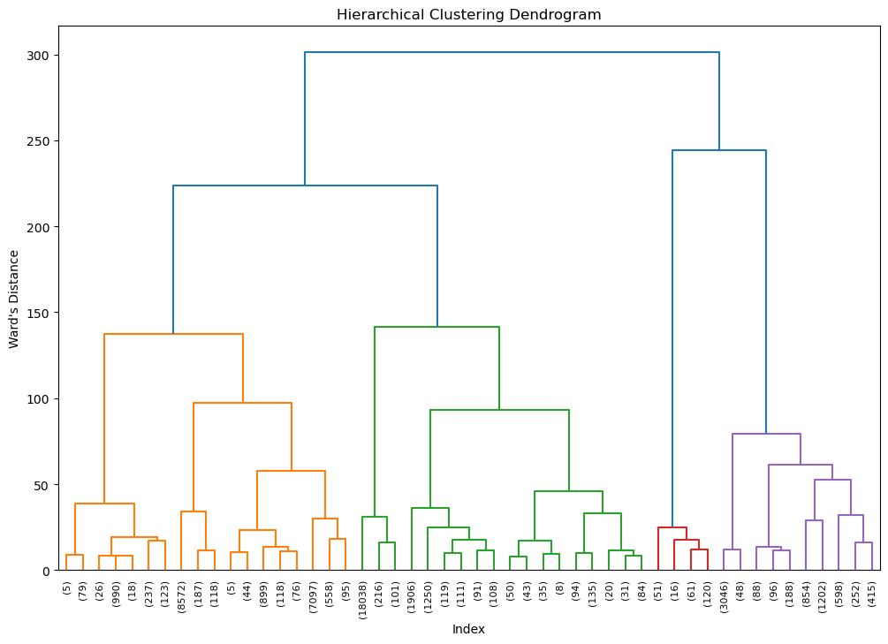
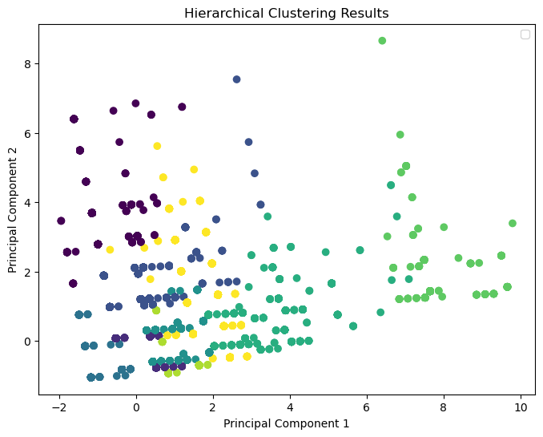

Clustering
Introdution
The data I choose is the data that recorded the information about vehicle involved in fatal crashes. The dataset consists of 54,552 entries and 16 columns, reflecting various aspects of vehicle-related incidents. The columns are:
- Weather (WEATHER): An integer representing different weather conditions at the time of the incident.
- State Case Number (ST_CASE): A unique identifier for each case.
- State (STATE): An integer indicating the state where the incident occurred.
- Light Condition (LGT_COND): An integer code representing the light conditions during the incident.
- Fatalities (FATALS): The number of fatalities in the incident.
- Driver Drinking (DR_DRINK): An indicator of whether the driver was drinking, represented as an integer.
- Driver ZIP Code (DR_ZIP): The ZIP code of the driver.
- Hit and Run (HIT_RUN): An integer indicating whether the incident was a hit-and-run.
- Driver’s License State (L_STATE): The state of issuance of the driver’s license.
- Make Name (MAKENAME), Make and Model Name (MAK_MODNAME): Textual descriptions of the vehicle’s make and specific make-model combination.
- Model Year (MOD_YEAR): The year of the vehicle model.
- Road Surface Condition (VSURCOND): An integer code representing the condition of the road surface.
- vPIC Make Name (VPICMAKENAME), vPIC Model Name (VPICMODELNAME): Textual descriptions of the vehicle’s make and model derived from the Vehicle Plant Inquiry Data (vPIC).
Each row in the dataset represents an incident, providing a comprehensive view of various factors like environmental conditions, vehicle specifics, and the nature of the incident.
What I’m trying to achieve is to the data to analyze what kind of environment(i.e. weather, road surface condition, light condition) would most likely to lead fatal crashes, and also which manufacture’s vehicles are involved in fatal crashes most.
Theory
K-Means Clustering
K_Means Clustering is a method used to partition data into groups (clusters) based on similarity. Imageine you are working in a retail store, and your boss want to understand, “Who will come to our store and buy goods from us?” Here you will have the data on customer who came to your store, on what they bought, how often they visit your store, and what goods will some customer will usually buy in one time. For example, you might notice that some customers, possibly students, come in every few days for essentials like milk, eggs, and bread, while others might visit less frequently but fill up multiple carts with a wide variety of items.
These distinct shopping behaviors suggest that your customers can be grouped into different segments. K-Means Clustering helps you do just that. By analyzing the purchase data, K-Means can categorize customers into segments based on their shopping habits. This segmentation is invaluable because it enables your store to tailor marketing strategies and product placements to cater to the specific needs and preferences of each group. For example, you might target the frequent, small-basket customers with quick checkout options and convenience goods, while the less frequent, large-basket shoppers might be more interested in bulk deals and a wider variety of products.
An essential aspect of K-Means Clustering is choosing the right number of clusters, denoted as ‘K’. This is where the Elbow Method comes in handy. It involves running the K-Means algorithm multiple times with varying numbers of clusters and plotting the average distance of data points from their cluster center for each run. As you increase K, there comes a point where increasing the number of clusters doesn’t significantly improve the closeness of data points to their centers. This point, evident as a bend or ‘elbow’ in the plot, is an indicator of an appropriate number of clusters. By using this method, you can determine the optimal number of customer segments, ensuring a more precise and effective customer segmentation strategy.
DBSCAN
DBSCAN (Density-Based Spatial Clustering of Applications with Noise) is a clustering technique that excels at grouping data points based on their density. It’s particularly effective when dealing with irregularly shaped clusters or data with a lot of ‘noise’ (irrelevant or outlier points). The process begins by selecting a random data point and searching for nearby points within a specified distance.
If enough points are found close to this initial point, DBSCAN treats this as a cluster. It then iteratively expands the cluster by finding all points close to each new point added to the cluster. Points that don’t belong closely to any cluster are marked as outliers.
This method is different from K-Means as it doesn’t require pre-setting the number of clusters. Instead, DBSCAN dynamically determines the number of clusters based on the data itself. However, it does require defining two key parameters: the distance threshold for points to be considered neighbors and the minimum number of points needed to form a dense region (or a cluster).
Let’s think about a practical application in urban planning. Suppose a city’s planning department wants to analyze traffic accident data to improve road safety. They have a dataset of traffic incident locations spanning several years. Using DBSCAN, they can pinpoint clusters of accidents, indicating high-risk areas on the roads.
This method is ideal for such data, as it adeptly handles the irregular clustering of accidents around road networks and distinguishes isolated incidents (noise) from significant patterns. Identifying these clusters helps the city focus on specific areas for safety improvements, like traffic signal installation or intersection redesigns. In essence, DBSCAN aids in the efficient allocation of resources to areas where they can have the most substantial impact on improving road safety and traffic management.
Hierarchical Clustering
Hierarchical Clustering is a method that arranges data into a hierarchy of nested clusters. There are two main approaches: Agglomerative (bottom-up) and Divisive (top-down). In the Agglomerative approach, each data point starts as its own cluster, and pairs of clusters are merged as one moves up the hierarchy. This is akin to constructing a family tree from the ground up, where individuals (data points) are grouped into families (clusters), and families into larger units, gradually forming the entire tree. The Divisive approach is the opposite, starting with all data points in one cluster and progressively dividing them into smaller clusters.
The result of this process is visualized in a dendrogram, a tree-like diagram. This diagram shows how every cluster is related to the others, and cutting the dendrogram at different levels gives different cluster groupings. To determine the best level for ‘cutting’, visual inspection is commonly used. Alternatively, one might use the Silhouette Score, which measures how similar an object is to its own cluster compared to other clusters. A high average silhouette score suggests well-defined clusters.
Applying this to a real-world scenario if you still don’t quite catch up. Consider a large organization with a vast array of digital documents. Managing and organizing these documents can be a significant challenge. Hierarchical clustering can effectively categorize these documents based on content similarity. Starting from individual documents, the algorithm creates a hierarchy where documents are grouped together based on their similarities. For example, all finance-related documents might form one cluster, which can further be subdivided into more specific groups like tax documents, investment reports, and budget plans. This hierarchical organization of documents allows for easier navigation and retrieval, enabling employees to find relevant documents more efficiently. It’s akin to organizing a library where books are grouped by genres and sub-genres, making it easier for readers to find what they’re looking for.
Methods
K-Means Clustering
Elbow Method
We will first use elbow method to determine the optimal number of clusters 
Here we chose the optimal number as 5 And we can get a cluster result like below 
Before we jump into result, we need to identify what does those number means
Here, numbers in each features represent differnt conditions.
| Weather | Light Condition | Road Surface Condition |
|---|---|---|
| 1. Clear | 1. Daylight | 0. Non - Trafficway or Driveway Access |
| 2. Rain | 2. Dark - Not Lighted | 1. Dry |
| 3. Sleet or Hail | 3. Dark - Lighted | 2. Wet |
| 4. Snow | 4. Dawn | 3. Snow |
| 5. Fog, Smog, Smoke | 5. Dusk | 4. Ice/Frost |
| 6. Severe Crosswinds | 6. Dark - Unknown Lighting | 5. Sand |
| 7. Blowing Sand, Soil, Dirt | 7. Other | 6. Water (Standing or Moving) |
| 8. Other | 8. Not Reported | 7. Oil |
| 9. N/A | 9. Reported as Unknown | 8. Other |
| 10. Cloudy | 9. Slush | |
| 11. Blowing Snow | 10. Mud, Dirt or Gravel | |
| 12. Freezing Rain or Drizzle |
So let’s dive in the result
Results of K-Means Clustering (Elbow Method)
Clusters Analysis: The clusters appear to be differentiated mostly along the ‘WEATHER’ and ‘VSURCOND’ axes. This suggests that weather conditions and road surface conditions play significant roles in differentiating between clusters. The histograms on the diagonal show the distribution of each feature within each cluster. For instance, one of the clusters (in red) seems to have a higher frequency of incidents occurring under a specific weather condition(1 and 2, that is clear or rain) whereas the light and road surface conditions are more spread out. This is because these are two most common weather condition happen on the road, whereas others are less likely to happen or in some states it won’t ever happen. Also, we can see from the (0,0) plot that the number of accidents happened during clear and rain are much larger than accidents happened in other weather condition.
Relationships between Features: In the scatter plots, you can see how the clusters are distributed with respect to two features at a time. For example, in the ‘WEATHER’ versus ‘LGT_COND’ scatter plot, you can see that some clusters are more prevalent under certain combinations of weather and light conditions. It looks like the blue, purple, and orange clusters are more scattered across conditions, indicating light condition might not have a strong impact on chance of fatal crashes, while the red and orange clusters also represent more specific conditions (Rain, Sleet or Hail, Blowing Snow or Freezing Rain, which will cause road surface condition getting worse and the chance of having a fatal crash increases dramatically).
Silhouette Method
The Silhouette method returned a quite similar result 
The optimal number of clusters should be 2, but there was not much useful infomration we can get form that, so I used the second highest score, which is 9 clusters.
And the results are 
Results of K-Means Clustering (Silhouette Method)
Based on the plot and the ouput result, we can infer that
- The highest risk of fatality seems to be associated with driving in the dark without proper lighting, especially in foggy conditions.
- Weather that impacts visibility, like fog and heavy clouds, or adverse road conditions, such as blowing snow and non-standard surfaces, appears to increase the risk of fatal accidents.
- Clusters with daylight, clear weather, and dry roads tend to have lower fatality rates, suggesting these are the safest conditions among the clusters analyzed.
- Rainy conditions with wet roads also show an increased average in fatalities, indicating the hazardous nature of such conditions.
DBSCAN
This is a cluster result plotted without any noise points on.

Clearly this plot cannot bring us any useful information, let’s try another way to see what will happen.

The plot shows a variety of clusters, each represented by a different color. Some clusters appear more densely packed, while others are sparse. The densely packed clusters likely represent more common combinations of weather, light, and road surface conditions that frequently occur together, while sparser ones may represent less common or more unique conditions. This is not an ideal result for us to see, and probablt DBSCAN is not a good model for this dataset.
Hierarchical Clustering
 
The plot shows PCA has been used to reduce the dimensionality of the data to two principal components, which are linear combinations of the original variables. The proximity of points within the same cluster (same color) suggests they are similar to each other based on the original features (weather, light, and road surface conditions).
Some clusters are more tightly grouped, suggesting that there are well-defined conditions under which a number of accidents commonly occur. Based on the size of count and the size of data, most of the likely combination could be clear weather, daylight, and dry road surface condition, which is the most environmental condition for an accident, also the most common one. Some other clusters that are sparse or have points spread out may indicate less common or more variable conditions. Probably these are some adverse weather conditions like fod or snow with dusk or dawn light condition, with some potential hazardous road surface condition that is rarely happen in real life. All of those needs to be confirmed by further analysis.
Conclusion
Based on those plots generated by differnt methods, I will say that K-Means is the best method for this dataset. It has the most intuitive result, and bring the most information. DBSCAN, on the other hand, is not as competitive as K-means as it seperate the dataset into too many small clusters, which is likely to capture noise and random fluctuations, also, in some cases, Each data point might become its own cluster, which defeats the purpose of clustering to find broader patterns.
Hierarchical Clustering is also a good method for this dataset as it generated just fine number of clusters and the clusters make sense logically and intuitively based on the domain knowledge and also make sense in the real world
In conclusion, our analysis of vehicle accident data through various clustering methods has provided us with meaningful insights into the conditions under which accidents are most likely to occur. By examining the environmental factors—specifically, weather conditions, lighting, and road surface states—we have identified patterns that could have significant implications for public safety and policy.
Predominant Conditions for Accidents:
A notable number of accidents occur under clear weather, during daylight, and on dry roads. This finding is somewhat counterintuitive as these conditions are typically considered safe. It suggests that other factors, such as driver distraction or traffic volume, might play a more significant role than expected.
High-Risk Conditions:
Although less frequent, accidents occurring under rare and extreme conditions, like severe crosswinds or during weather phenomena like blowing sand, are especially concerning. These events, while not common, have a high impact and could benefit from targeted, situation-specific safety measures.
Overlap of Conditions:
The overlap between clusters in certain conditions, such as cloudy weather transitioning to rain, indicates that accidents under these conditions may not be distinctly more dangerous than others. This suggests that interventions should be balanced across a range of weather conditions rather than focusing on one in isolation
Potential for Targeted Interventions:
Understanding the commonalities within each cluster allows for the development of targeted interventions. For instance, enhancing street lighting and implementing anti-fog measures could mitigate the risk of accidents under specific conditions identified as higher risk.
In real-life terms, this analysis could help inform where and when to focus road safety resources to prevent accidents. It could lead to better-timed traffic advisories, more effective deployment of road maintenance crews, and smarter city planning regarding road design and lighting. On a personal level, it could help drivers be more aware of the conditions that are deceptively risky, like clear days, or truly dangerous, like foggy, poorly lit nights, potentially encouraging safer driving behaviors.
Ultimately, the goal of this analysis is to contribute to safer roads and to reduce the number and severity of traffic accidents, potentially saving lives and reducing injuries among road users.